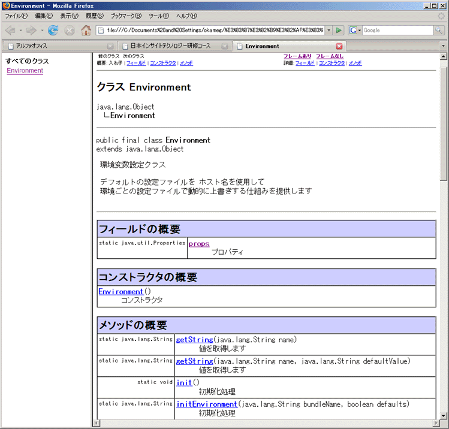
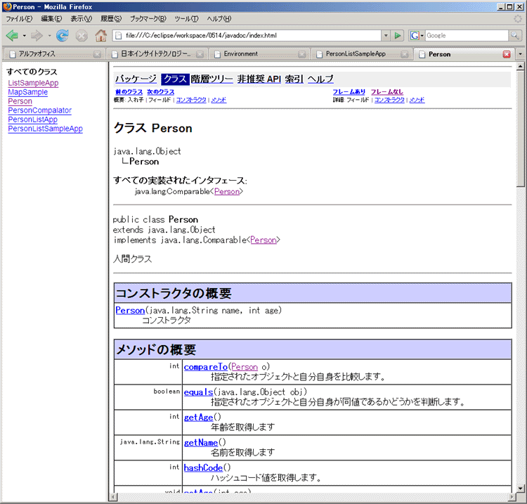
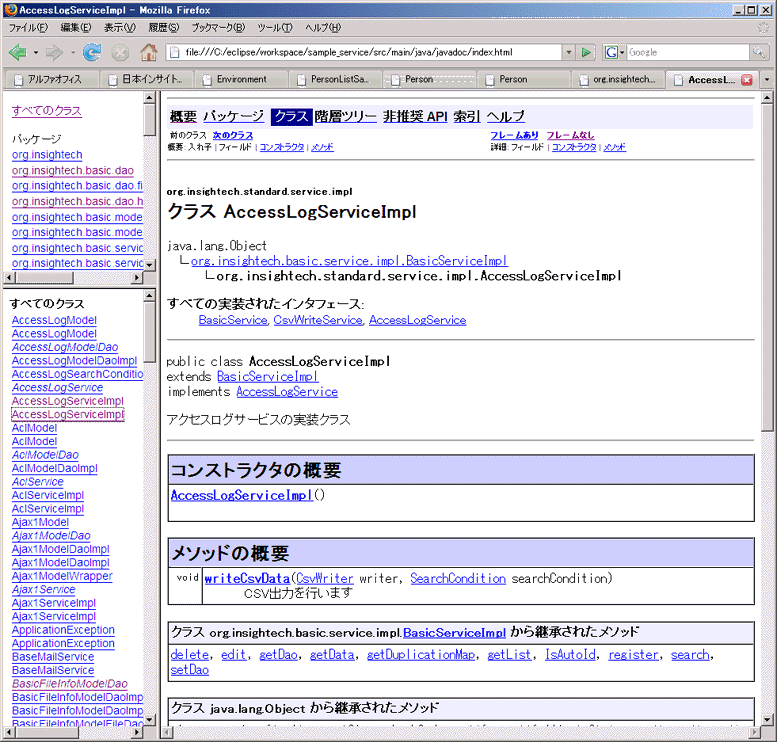

JavaDocの書き方
はじめに
このドキュメントを読むにあたっては、
- Javaのコードが書ける
- メソッドについて、戻り値や引数などを理解しており自分で作成できる
- Java プラットフォーム API 仕様を見たことがある
- 基本的なHTMLタグに関しての知識がある
ことを前提とします。
どのプログラミング言語でも共通ですが、プログラムの可読性を挙げるためにコメントを利用します。
このドキュメントではJavaでのコメントの書き方および、JavaDocの書き方を説明します。
Javaで使用するコメント
Javaのコメントの記述方法は、以下の表のように使用用途によって分けられます。
| // |
通常は一行のみのコメントを記述する際に使用する |
/* */ |
通常はブロックで記述するコメントなどに使用する |
/** */ |
JavaDoc生成用に使用する |
まずは、これらを使用したソースコードサンプルを見てみましょう。
コメントのある部分に注意して一通り眺めてみてください。
/**
* <pre>
* 環境変数設定クラス.
*
* デフォルトの設定ファイルを ホスト名を使用して
* 環境ごとの設定ファイルで動的に上書きする仕組みを提供します
* </pre>
*
* @author RobertMeda
* @version v 1.4
*/
public final class Environment {
/** プロパティ */
public static Properties props;
/**
* コンストラクタ
*/
public Environment() {
}
/**
* 初期化処理.
*
* @throws UnknownHostException ホストが見つからなかった場合
*/
public static void init() throws UnknownHostException {
// 上書きするファイルの接尾辞
String suffix = null;
props = new Properties();
initEnvironment("environments.Application", false);
suffix = initEnvironment("environments.Environment", true);
if (suffix != null) {
initEnvironment("environments.Environment_" + suffix, false);
}
}
/**
* 初期化処理.
*
* @param bundleName バンドルファイル名
* @param defaults デフォルトの設定ファイルかどうか
* @return 上書きする場合、上書きファイルの接尾辞
* @throws UnknownHostException ホストが見つからなかった場合
*/
public static String initEnvironment(String bundleName, boolean defaults)
throws UnknownHostException {
/*
指定されたバンドルファイルから読み込んだキーと値ををプロパティに保存し、
指定されたバンドルファイルがデフォルトファイルである場合、
かつキーが「env」で始まり、値が実行ホスト名と一致する場合は、
設定を上書きするためのファイルの接尾辞を返却します。
*/
String suffix = null;
String hostName = null;
if (defaults) {
hostName = InetAddress.getLocalHost().getHostName().trim()
.toLowerCase();
}
ResourceBundle rb = ResourceBundle.getBundle(bundleName);
Enumeration keys = rb.getKeys();
while (keys.hasMoreElements()) {
String key = (String) keys.nextElement();
String value = rb.getString(key);
props.setProperty(key, value);
if (defaults && suffix == null && key.startsWith("env.")
&& !"".equals(value)
&& hostName.startsWith(value.toLowerCase())) {
suffix = key.substring(4, 7);
}
}
return suffix;
}
/**
* 値を取得します.
*
* @param name キー
* @return 値
*/
public static String getString(String name) {
return props.getProperty(name);
}
/**
* 値を取得します.
*
* @param name キー
* @param defaultValue デフォルト値
* @return 値
*/
public static String getString(String name, String defaultValue) {
String str = getString(name);
if (str == null) {
return defaultValue;
}
return str;
}
// --- 以下省略
}
メソッドのブロック内で「//」や「/* */」等のコメントが使用されています。
これらのコメントは、ソースコードの記述を補助する役割で使用される通常のコメントです。
クラスの宣言部分を見てみましょう。「/**」〜「*/」というコメントが使用されています。
これはJavaDoc用のコメントです。間にある「*」は、必須ではありませんが、慣例として次のように記述されます。
/**
* 環境変数設定クラス.
*
* <pre>
* デフォルトの設定ファイルを ホスト名を使用して
* 環境ごとの設定ファイルで動的に上書きする仕組みを提供します
* </pre>
* @author RobertMeda
* @version v 1.4
*/
public final class Environment {
JavaDoc用のコメントは、記述する場所が以下のように決まっています。
- クラス宣言
- フィールド宣言
- コンストラクタ宣言
- メソッド宣言
JavaDocの書き方
それではそれぞれの宣言部分でのJavaDoc用コメントの記述方法についてさらに見ていきましょう。
JavaDocコメントの記述方法
JavaDocコメント記述方法には基本的に以下のルールがあります。
- 「/**」で始まり「*/」で終わる。
- クラス、フィールド、コンストラクタ、メソッドの宣言文の直前に記述する。
- @で始まる文字列（タグ）でパラメーターや戻り値の説明を記述する。
- <h1>や<p>のようなHTML用のタグが使用できる。
- 1行目（概要）は、.（ピリオド）で終了させる。概要には最初のピリオドまでの文言が使用させる。
- クラス宣言
/**
* <h1>環境変数設定クラス.</h1>
*
* <pre>
* デフォルトの設定ファイルを ホスト名を使用して
* 環境ごとの設定ファイルで動的に上書きする仕組みを提供します
* </pre>
*
* @author RobertMeda
* @version 1.4
*/
public final class Environment {
クラス宣言部分のコメントには、
クラスの説明と、@authorタグを使用した「著者の説明」、@versionタグを使用したプログラムバージョンを記述します。
最初にリリースされたものであればバージョンは1.0となります。
また、クラスの説明部分に改行を入れた場合でも、このコメントを使用して出力したJavaDocでは改行が無視されてしまいます。
改行を入れたり、文章を整えたい場合は<br>タグや<p>タグ、<h1>など、HTMLタグを適宜使用してください。
- フィールド宣言
/** プロパティ. */
public static Properties props;
フィールド宣言部分のコメントは、一行でフィールドの説明を記述します。
- コンストラクタ宣言
/**
* コンストラクタ.
*/
public Environment() {
}
コンストラクタ宣言部分のコメントは、コンストラクタの説明を記述します。
たいていの場合、コンストラクタで行っている処理は変数の初期化処理ぐらいで、他に説明するような
大層な処理もやっていないでしょうから、そのような場合は、この例のように「コンストラクタ」とだけずばり
そのまま記述しておけば問題ありません。
コンストラクタに引数がある場合は、@paramタグ、例外宣言がある場合は@throwsタグを使用します。
/**
* コンストラクタ.
*
* @param className クラス名
* @throws InstantiationException インスタンス生成失敗時
*/
public Environment(String className) throws InstantiationException {
}
- メソッド宣言
/**
* <h1>初期化処理.</h1>
*
* @param bundleName バンドルファイル名
* @param defaults デフォルトの設定ファイルかどうか
* @return 上書きする場合、上書きファイルの接尾辞
* @throws UnknownHostException ホストが見つからなかった場合
*/
public static String initEnvironment(String bundleName, boolean defaults)
throws UnknownHostException {
メソッド宣言部分のコメントは、メソッドの説明を記述します。
メソッドの説明部分の改行は出力される JavaDoc では無視されますので、
改行を入れたり、文章を整えたい場合は<br>タグや<p>タグ、<h1>など、HTMLタグを適宜使用してください。
メソッドに引数や戻り値がある場合は、@param タグと @return タグにてメソッドの引数や戻り値の説明を記述します。
また例外の宣言がある場合は、@throws タグにて例外の説明を記述します。
引数や戻り値がない場合のメソッドの場合は、以下のようになります。
/**
* 情報を出力します.
*
*/
public void printInfo() {
JavaDoc用のタグ（@から始まるもの）の種類はたくさんありますが、研修で使用するタグは以下の通りです。
実際のプロジェクトでも、これ以外のタグを使用することはあまりないので、これらが使いこなせれば問題ありません。
これらのタグについてはご自分で作成したソースコード内では全て記述するようにしてください。
| タグ |
文法 |
説明 |
一般的な使用箇所 |
| @author |
@author 著者 |
実装者の名前を記述します |
クラス宣言 |
| @version |
@version バージョン |
コードのバージョンを記述します |
クラス宣言 |
| @param |
@param 引数名 引数の説明 |
引数の説明を記述します |
メソッド、コンストラクタ宣言 |
| @return |
@return 戻り値の説明 |
戻り値の説明を記述します |
メソッド宣言 |
| @throws |
@throws 例外クラス名 説明(例外発生の条件等) |
宣言されている例外の説明を記述します |
メソッド、コンストラクタ宣言 |
@param タグや @throws タグは引数名や、例外クラス名の後ろにスペース区切りで説明を記述することに注意しましょう。
その他のタグなど、JavaDoc の記述方法詳細に関しては、JavaDoc テクノロジのドキュメントの説明をご覧下さい。
JavaDocの出力
さて、ここまではJavaDocの記述方法を解説してきました。
しかし、JavaDoc用のコメントはソースコードを見やすくするためだけのものではなく、
その名の通りJavaDocを生成するためにあります。
そこで最後に、JavaDocコメントから、JavaDocを生成してみましょう。
Javaではドキュメントを出力するために、javadoc.exeコマンド（javac.exeやjava.exeと同じフォルダにあります）があり、これを使用します。
以下のサンプルでは、Javaのbinフォルダにパスが通っていることを前提として進めます。
単体の*.javaファイルのJavaDocを出力する
JavaDocは、
>javadoc Javaファイル
と、対象のJavaファイル名を指定してコマンドを実行することで簡単に生成できます。
しかし、JavaDocは大量のHTMLファイルで構成されているため、そのまま出力すると大変なことになります。
そこで、JavaDocの出力先ディレクトリを指定して生成することにします。
コマンドラインから、JavaDoc生成元のJavaファイルと、生成先のフォルダを指定します。
>javadoc -d 出力先フォルダ Javaファイル
では実行してみます。
現在のディレクトリには予め「Environment.java」ファイルを置いて、「javadoc」フォルダを作成してあります。
（この「javadoc」フォルダ内に、生成されたJavaDocが格納されます。）
---- + (カレントディレクトリ)
|
+ ----- Environment.java
+ ----- javadoc/
研修生の皆さんが実行する場合は、「Environment.java」ファイルの代わりに自分で作った java ファイルを置き、
「javadoc」フォルダを作成してから、同じようにコマンドを実行してみてください。
C:\Documents and Settings\okameg\デスクトップ>javadoc -d javadoc Environment.java
ソースファイル Environment.java を読み込んでいます...
Javadoc 情報を構築しています...
標準 Doclet バージョン 1.6.0_05
全パッケージとクラスの階層ツリーを作成しています...
javadoc\Environment.html の生成
javadoc\package-frame.html の生成
javadoc\package-summary.html の生成
javadoc\package-tree.html の生成
javadoc\constant-values.html の生成
全パッケージとクラスのインデックスを作成しています...
javadoc\overview-tree.html の生成
javadoc\index-all.html の生成
javadoc\deprecated-list.html の生成
全クラスのインデックスを作成しています...
javadoc\allclasses-frame.html の生成
javadoc\allclasses-noframe.html の生成
javadoc\index.html の生成
javadoc\help-doc.html の生成
javadoc\stylesheet.css の生成
:
実行が終了したら、「javadoc」フォルダに生成されたファイルの中から「index.html」をブラウザで開いてみます。
※ 下の図は、古い version の JavaDoc になります。

Java プラットフォーム API 仕様と同じようなAPIが生成されました。
フォルダに入っている全てのJavaコードのJavaDocを生成する
複数のJavaファイルを「*」ワイルドカードで指定して、JavaDocを生成することができます。
>javadoc -d 出力先フォルダ *.java
現在のディレクトリには、「src」という名前のフォルダがあり、その中に複数のJavaファイルが格納されています。
---- + (カレントディレクトリ)
|
+ ----- src/ ----- +
+ -----ListSampleApp.java
+ -----MapSample.java
+ -----Person.java
+ -----PersonComparator.java
+ -----PersonListApp.java
+ -----PersonListSampleApp.java
このファイル群の JavaDoc を生成するには、次のようにコマンドを実行します。
>javadoc -d javadoc -sourcepath src src\*.java
※ 下の図は、古い version の JavaDoc になります。

複数のファイルのJavaDocが生成されました。
コマンドの一番最後の引数、ファイル名の指定はコマンドを実行するディレクトリからJavaファイルへの相対パス、または絶対パスを指定します。
指定したパッケージ内のJavaコード全てのJavaDocを生成する
指定したパッケージ内のすべてのJavaDocを出力する方法です。
ソースフォルダへの実行ディレクトリからの相対パスまたは、絶対パスを指定し、パッケージ名を指定します。
実行ディレクトリがパッケージのルートの部分にあたる場合は、ソースフォルダの指定はしなくてもかまいません。
>javadoc -d 出力先フォルダ -sourcepath ソースフォルダ パッケージ名1 パッケージ名2...
現在のディレクトリには、「java」という名前のソースフォルダがあり、
その中にパッケージ「org.insightech.basic.dao」から「org.insightech.testcase.djunit」まで、74のパッケージがが格納されています。
---- + (カレントディレクトリ)
|
+ ----- java/
+ -- org/ （パッケージのルート）
+ -- insightech/
+ -- basic/
| + -- dao/
| + -- BasicFileInfoModelDao.java
| + -- BasicModelDao.java
| + -- file/
| | + -- BasicFileInfoModelFileDaoImpl.java
| + -- hibernate/
| + -- BasicFileInfoModelDaoImpl.java
| + -- BasicModelDaoImpl.java
+ -- common/
: + -- commandexec/
: + -- ProcessExec.java
: : :
では実行してみます。
>javadoc -d javadoc -sourcepath java org.insightech.basic.dao org.insightech.basic.dao.file org.insightech.basic.dao.hibernate org.insightech.basic.model org.insightech.basic.model.search org.insightech.basic.service org.insightech.basic.service.impl org.insightech.common.commandexec org.insightech.common.context org.insightech.common.context.workspace org.insightech.common.context.workspace.impl org.insightech.common.dao org.insightech.common.dao.hibernate org.insightech.common.exception org.insightech.common.io org.insightech.common.io.csv org.insightech.common.io.filefilter org.insightech.common.mail org.insightech.common.model org.insightech.common.model.search org.insightech.common.operationlog org.insightech.common.operationlog.springaop org.insightech.common.service org.insightech.common.service.aop org.insightech.common.service.impl org.insightech.common.service.mail org.insightech.common.servicelocator org.insightech.common.servicelocator.impl org.insightech.common.util org.insightech.ext.dao org.insightech.ext.dao.file org.insightech.ext.dao.hibernate org.insightech.ext.model org.insightech.ext.model.search org.insightech.ext.service org.insightech.ext.service.impl org.insightech.ext.service.mail.impl org.insightech.standard.dao org.insightech.standard.dao.hibernate org.insightech.standard.model org.insightech.standard.model.search org.insightech.standard.service org.insightech.standard.service.impl org.insightech.standard.service.mail.impl org.insightech org.insightech.basic.dao.file org.insightech.basic.dao.hibernate org.insightech.basic.model org.insightech.basic.model.search org.insightech.common.commandexec org.insightech.common.context org.insightech.common.context.workspace org.insightech.common.context.workspace.impl org.insightech.common.dao.hibernate org.insightech.common.exception org.insightech.common.io org.insightech.common.io.csv org.insightech.common.io.filefilter org.insightech.common.mail org.insightech.common.model org.insightech.common.model.search org.insightech.common.operationlog org.insightech.common.service.impl org.insightech.common.servicelocator.impl org.insightech.common.util org.insightech.ext.dao.file org.insightech.ext.dao.hibernate org.insightech.ext.service.impl org.insightech.ext.service.mail.impl org.insightech.standard.model org.insightech.standard.service.impl org.insightech.standard.service.mail.impl org.insightech.testcase org.insightech.testcase.djunit
実行結果ではなく、コマンドがこのように長くなります。
多少わかりづらいですが、すべてのパッケージ名を連ねています。
※ 下の図は、古い version の JavaDoc になります。

パッケージも含んだJavaDocが生成されました。
このように引数が大量になり、コマンドライン入力では苦しい場合は、
javadocコマンドに引き渡すオプションやソースファイル情報をテキストファイルに記述しておき、
>javadoc @ファイル名
のように指定することもできます。
この他にも便利な引数がたくさんあります。一覧を見るには、-help オプションをつけて実行します。
>javadoc -help
C:\Documents and Settings\okameg\デスクトップ\src\app>javadoc -help
使用法: javadoc [options] [packagenames] [sourcefiles] [@files]
-overview HTML ファイルから概要ドキュメントを読み込む
-public public クラスとメンバのみを示す
-protected protected/public クラスとメンバを示す (デフォルト)
-package package/protected/public クラスとメンバを示す
-private すべてのクラスとメンバを示す
-help コマンド行オプションを表示して終了する
-doclet 代替 doclet を介して出力を生成する
-docletpath doclet クラスファイルを探す場所を指定する
-sourcepath ソースファイルのある場所を指定する
-classpath ユーザクラスファイルのある場所を指定する
-exclude 除外するパッケージリストを指定する
-subpackages 再帰的にロードするサブパッケージを指定する
-breakiterator BreakIterator で最初の文を計算する
-bootclasspath ブートストラップクラスローダによりロードされた
クラスファイルの位置をオーバーライドする
-source 指定されたリリースとソースの互換性が提供される
-extdirs 拡張機能がインストールされた位置をオーバーライドする
-verbose Javadoc の動作についてメッセージを出力する
-locale en_US や en_US_WIN などの使用するロケール
-encoding ソースファイルのエンコーディング名
-quiet 状態メッセージを表示しない
-J を実行システムに直接渡す
標準の doclet により提供されるもの:
-d 出力ファイルの転送先ディレクトリ
-use クラスとパッケージの使用ページを作成する
-version @version パラグラフを含める
-author @author パラグラフを含める
-docfilessubdirs doc-file サブディレクトリを再帰的にコピーする
-splitindex 1 字ごとに 1 ファイルに索引を分割する
-windowtitle ドキュメント用のブラウザウィンドウタイトル
-doctitle 概要ページにタイトルを含める
: (以下省略)
:
おわりに
コメントを全く記述しないと、例えそれが自分の書いたプログラムでも後から読み直す際にわかりづらいものです。
また、逆に大量のコメントはソースを追う時に邪魔になります。
ソースから容易に読み取れる部分のコメントは省きつつ、必要最小限のコメントを入れるようにしましょう。
コメントを書く必要のない程わかりやすいコードに修正できるかどうかを、常に考えてコーディングするのがベストです。
また、「コメントだから自分がわかればいい」程度の考えで、
ふざけたコメントや、口語、絵文字のコメントを入れるのは、開発のプロとしては失格です。
「コメントは後続の開発者の目に触れるもの」との認識をもって、わかりやすいコメントを入れるように常に心がけましょう。
©日本インサイトテクノロジー株式会社